监控可视化
Prometheus+Grafana监控部署指南（基于K8s Helm，含外部MySQL监控）
一、监控部署目标
本次部署通过 Helm 安装 kube-prometheus-stack，实现以下监控范围：
- K8s 集群整体状态
- 集群节点 CPU/内存等资源
- K8s 集群内 Pod 资源
- Nginx 服务状态
- 外部 MySQL 服务（192.168.126.135 / 192.168.126.136）
部署方式：使用 kube-prometheus-stack（通过 Helm 部署）
二、在 K8s Master 节点安装 Helm（192.168.126.132 执行）
# 下载并安装 Helm 3
curl https://raw.githubusercontent.com/helm/helm/main/scripts/get-helm-3 | bash2.1 验证 Helm 安装
# 查看 Helm 版本，验证安装成功
helm version✅ 验证结果：输出 Helm 版本信息（如 v3.20.0），即为安装成功。
备注：若提示“Could not find git. It is required for plugin installation.”，可忽略，不影响基础使用。
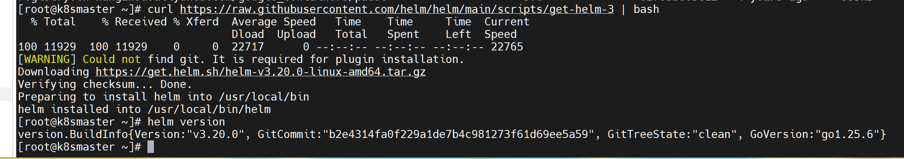
三、添加 Prometheus 仓库
# 添加 Prometheus 官方社区仓库
helm repo add prometheus-community https://prometheus-community.github.io/helm-charts国内备用方案（若官方仓库下载缓慢）：
- 使用微软仓库替代
- 直接下载指定版本安装包：https://github.com/prometheus-community/helm-charts/releases/download/kube-prometheus-stack-56.13.1/kube-prometheus-stack-56.13.1.tgz
四、创建监控专用命名空间
# 创建 monitoring 命名空间，用于隔离监控组件
kubectl create namespace monitoring五、安装 kube-prometheus-stack
# 基于本地下载的安装包部署（需提前将安装包上传至 Master 节点 /root 目录）
helm install monitor /root/kube-prometheus-stack-56.13.1.tgz -n monitoring⚠️ 注意：部署后等待 1-3 分钟，让 Pod 逐步启动。
5.1 查看部署状态
# 查看 monitoring 命名空间下所有 Pod 状态
kubectl get pods -n monitoring⚠️ 常见问题：部分 Pod 会出现 ErrImagePull 或 ImagePullBackOff 状态，需手动下载缺失镜像。
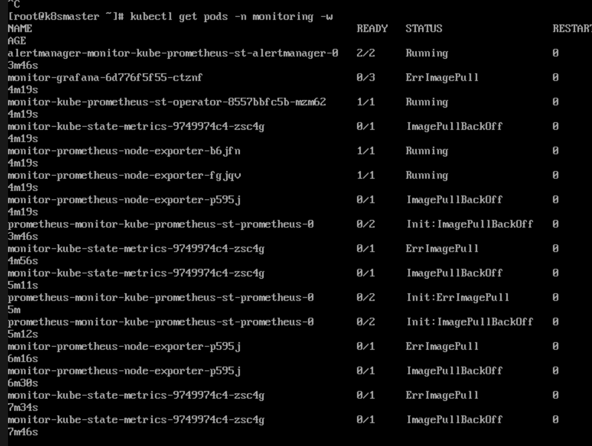
5.2 手动下载缺失镜像（Master 节点执行）
由于网上各个源不稳定，只好开代理手动下载镜像并导出，然后导入到其他节点
# 下载所需镜像（版本与部署包匹配）
docker pull grafana/grafana:9.5.15
docker pull registry.k8s.io/kube-state-metrics/kube-state-metrics:v2.9.2
docker pull quay.io/prometheus/node-exporter:v1.6.1
docker pull quay.io/prometheus/prometheus:v2.45.05.3 镜像分发至其他节点
# 1. 将下载的镜像导出为 tar 包（可在任一节点执行，此处以 Node2 为例）
docker save -o /root/monitor_images_all.tar \
quay.io/prometheus/prometheus:v2.45.0 \
quay.io/prometheus/node-exporter:v1.6.1 \
registry.k8s.io/kube-state-metrics/kube-state-metrics:v2.9.2 \
grafana/grafana:9.5.15
# 2. 将 tar 包拷贝至其他节点（如 Master 节点），并导入镜像
# 拷贝（Node2 执行）
scp /root/monitor_images_all.tar root@192.168.126.132:/root/
# 导入（Master 节点执行）
docker load -i /root/monitor_images_all.tar✅ 验证结果：执行 docker load 后，输出“Loaded image”相关提示，即为镜像导入成功。
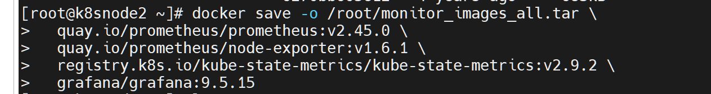
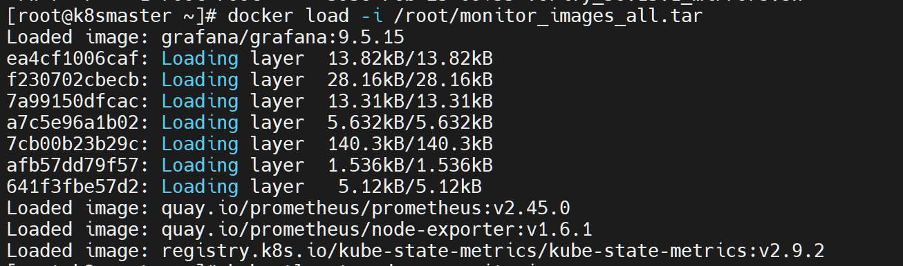
5.4 重建故障 Pod
# 删除 monitoring 命名空间下状态非 Running 的 Pod，等待 Deployment 自动重建
kubectl delete pods -n monitoring --field-selector=status.phase!=Running✅ 验证结果：再次执行 kubectl get pods -n monitoring，所有 Pod 状态均为 Running，即为部署成功。
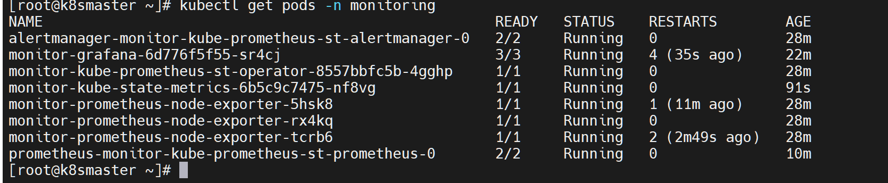
六、暴露 Grafana 服务（改为 NodePort 类型，便于外部访问）
6.1 查看当前 Grafana Service 状态
# 查看 monitoring 命名空间下所有 Service
kubectl get svc -n monitoring找到名称为 monitor-grafana 的 Service，默认类型为 ClusterIP。
6.2 编辑 Service，修改为 NodePort 类型
# 编辑 monitor-grafana Service
kubectl edit svc monitor-grafana -n monitoring将配置中的 type: ClusterIP 改为 type: NodePort，保存退出。
6.3 验证 Grafana 暴露结果
# 再次查看 Service 状态
kubectl get svc -n monitoring✅ 验证结果：monitor-grafana 类型变为 NodePort，PORT(S) 显示 80:300xx/TCP（如 80:30044/TCP），即为暴露成功。
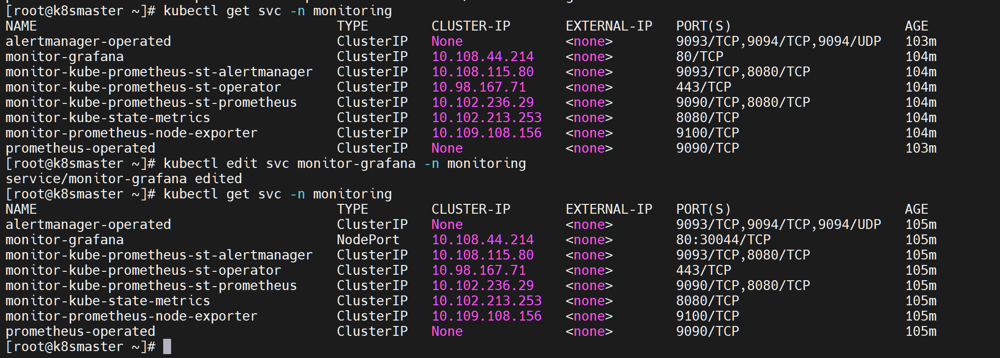
七、访问 Grafana 控制台
7.1 浏览器访问
访问地址：http://192.168.126.132:30044（IP 为 Master 节点 IP，端口为上一步显示的 NodePort 端口）
7.2 获取默认登录密码
# 从 Secret 中提取 Grafana 管理员密码（Master 节点执行）
kubectl get secret monitor-grafana -n monitoring -o jsonpath="{.data.admin-password}" | base64 --decode✅ 登录信息：
- 默认账号：admin
- 默认密码：执行上述命令获取（通常为 prom-operator）
✅ 验证结果：输入账号密码成功登录 Grafana 控制台，即为访问成功。
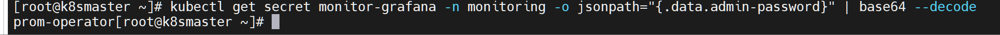
八、验证 Prometheus 服务
8.1 暴露 Prometheus 服务（可选，便于直接访问）
# 编辑 Prometheus Service，改为 NodePort 类型
kubectl edit svc monitor-kube-prometheus-st-prometheus -n monitoring将type: ClusterIP 改为 type: NodePort，保存退出，查看暴露的端口（如 9090:32665/TCP）。
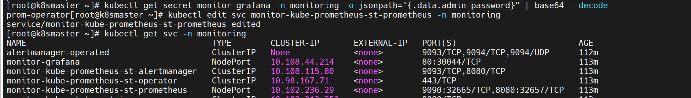
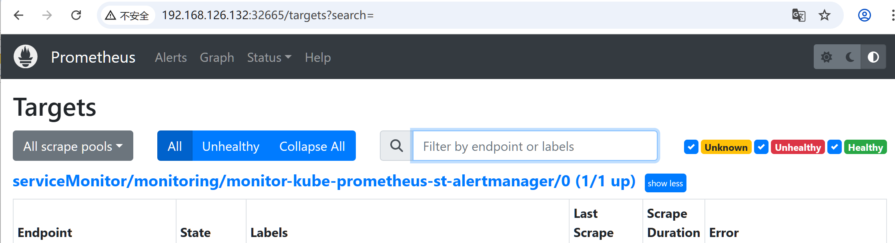
8.2 验证 Prometheus 数据源（通过 Grafana）
- 登录 Grafana 控制台，点击左侧「Connections」→「Data sources」→「Add new connection」
- 选择 Prometheus 数据源，配置 Prometheus 服务地址：
- 内部地址（推荐）：http://monitor-kube-prometheus-st-prometheus:9090
- 外部地址：http://192.168.126.132:32665（替换为实际暴露的 NodePort 端口）
- 点击「Save & test」，提示“Successfully queried the Prometheus API”即为配置成功。
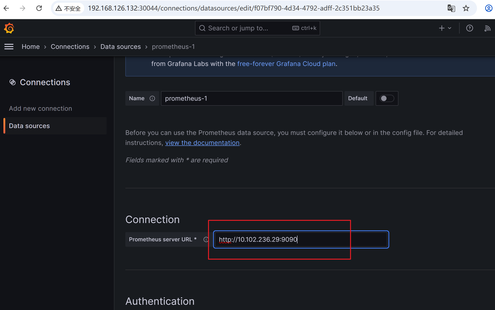
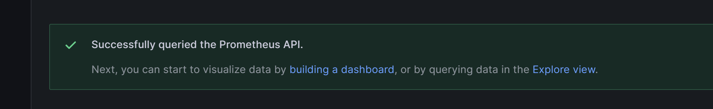
8.3 导入 Node 监控仪表盘
- 点击 Grafana 左侧「Dashboards」→「New dashboard」
- 选择「Import via grafana.com」，输入仪表盘 ID：1860（Node Exporter Full 仪表盘）
- 选择刚才配置的 Prometheus 数据源（如 prometheus-1），点击「Import」
✅ 验证结果：仪表盘成功加载，可查看集群节点的 CPU、内存、磁盘等资源监控数据，即为配置成功。
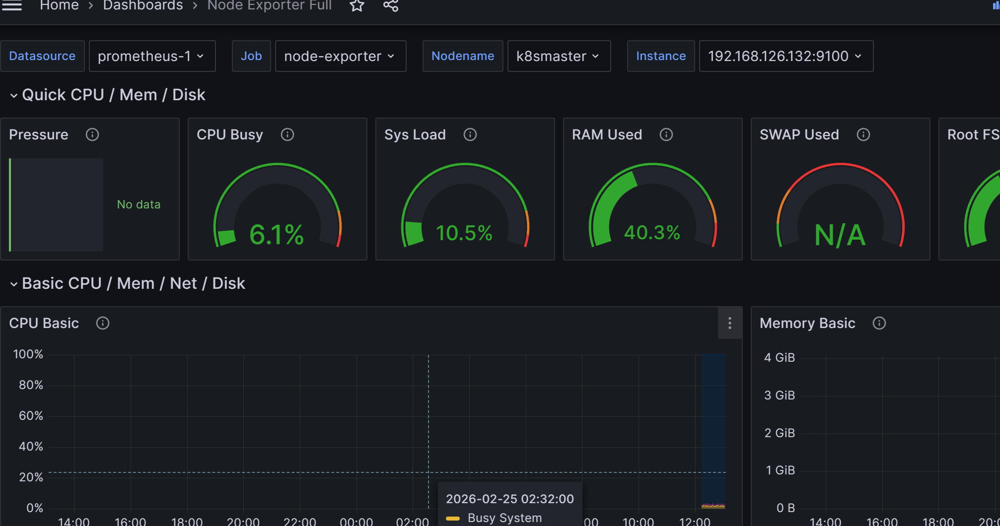
九、监控外部 MySQL 服务（192.168.126.135 / 192.168.126.136 均操作）
9.1 安装 mysqld_exporter（MySQL 监控插件）
# 1. 下载 mysqld_exporter 压缩包
wget https://github.com/prometheus/mysqld_exporter/releases/download/v0.18.0/mysqld_exporter-0.18.0.linux-amd64.tar.gz
# 2. 解压压缩包
tar -xf mysqld_exporter-0.18.0.linux-amd64.tar.gz
# 3. 进入解压目录
cd mysqld_exporter-0.18.0.linux-amd64/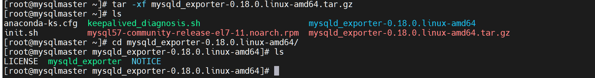
9.2 配置 MySQL 监控账号（仅主库 192.168.126.135 执行）
# 登录 MySQL 主库
mysql -u root -p'YourStrongPass123!'
# 创建监控专用账号（允许所有地址访问，也可限制为 Prometheus 所在节点 IP）
CREATE USER 'exporter'@'%' IDENTIFIED BY 'Exporter@Pass2026!';
# 授予监控所需权限
GRANT PROCESS, REPLICATION CLIENT, SELECT ON *.* TO 'exporter'@'%';
# 刷新权限
FLUSH PRIVILEGES;
# 退出 MySQL
exit✅ 验证结果：执行上述 SQL 无报错，即为账号创建成功。
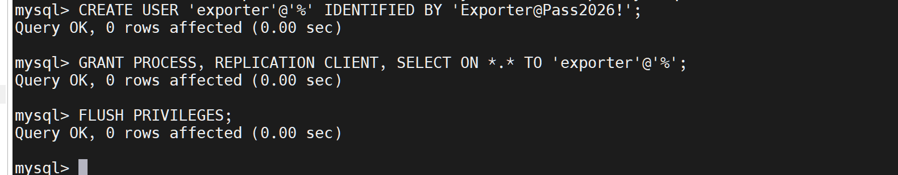
9.3 配置 mysqld_exporter（两台 MySQL 服务器均执行）
# 进入 mysqld_exporter 解压目录，创建配置文件
vim ~/.my.cnf
# 配置文件内容（填写刚才创建的监控账号信息）
[client]
user=exporter
password=Exporter@Pass2026!9.4 启动 mysqld_exporter
# 后台启动 mysqld_exporter（默认端口 9104）
./mysqld_exporter ✅ 验证结果：浏览器访问 http://192.168.126.135:9104/metrics 和 http://192.168.126.136:9104/metrics，能看到 MySQL 监控指标数据，即为启动成功。
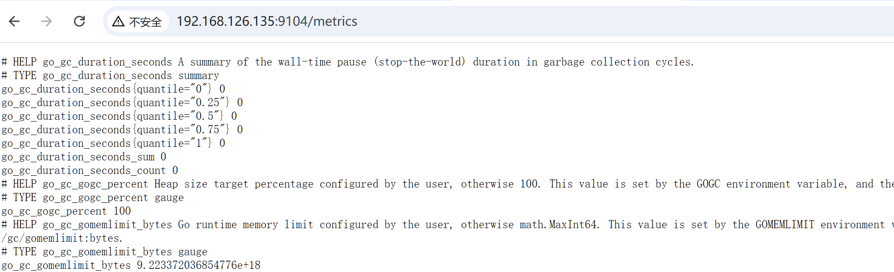
9.5 在 Prometheus 中添加 MySQL 监控目标
9.5.1 创建 scrape 配置文件
# 在 Master 节点创建 MySQL 监控配置文件
cat > /root/mysql-scrape.yaml <<'EOF'
job_name: "mysql"
static_configs:
- targets: ["192.168.126.135:9104", "192.168.126.136:9104"]
EOF9.5.2 创建 Secret 存储配置文件
# 在 monitoring 命名空间创建 Secret
kubectl create secret generic additional-scrape-configs -n monitoring \
--from-file=mysql-scrape.yaml✅ 验证结果：执行 kubectl get secret -n monitoring，能看到 additional-scrape-configs，即为创建成功。
9.5.3 编辑 Prometheus CR，引用 Secret
# 编辑 Prometheus 配置
kubectl edit prometheus monitor-kube-prometheus-st-prometheus -n monitoring在 spec 字段下添加以下配置，引用刚才创建的 Secret：
spec:
additionalScrapeConfigs:
name: additional-scrape-configs
key: mysql-scrape.yaml保存退出，等待 Prometheus 重启生效。
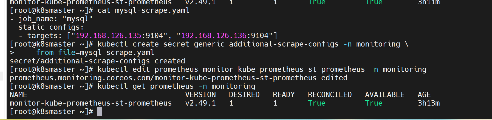
9.5.4 验证 MySQL 监控目标
访问 Prometheus 控制台（http://192.168.126.132:32665/targets，替换为实际端口），搜索 mysql，查看监控目标状态。
✅ 验证结果：两个 MySQL 节点的监控目标均显示 UP，即为配置成功。
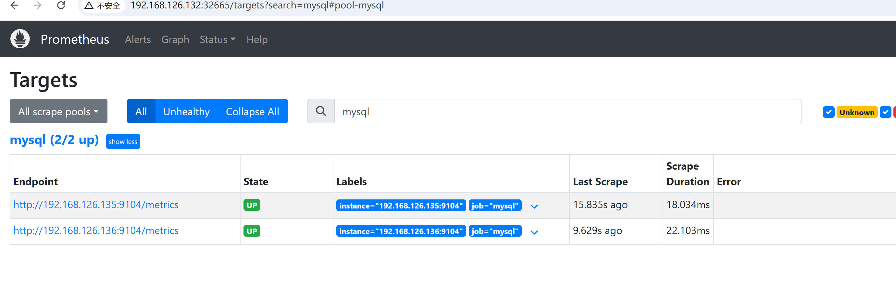
十、Grafana 导入 MySQL 监控仪表盘
- 登录 Grafana 控制台，点击左侧「Dashboards」→「Import dashboard」
- 在「Import via grafana.com」输入框中，输入仪表盘 ID：7362（MySQL Overview 仪表盘）
- 点击「Load」，选择之前配置的 Prometheus 数据源，点击「Import」
✅ 验证结果：仪表盘成功加载，可查看两台 MySQL 服务器的 QPS、连接数、运行时间等监控数据，即为配置成功。
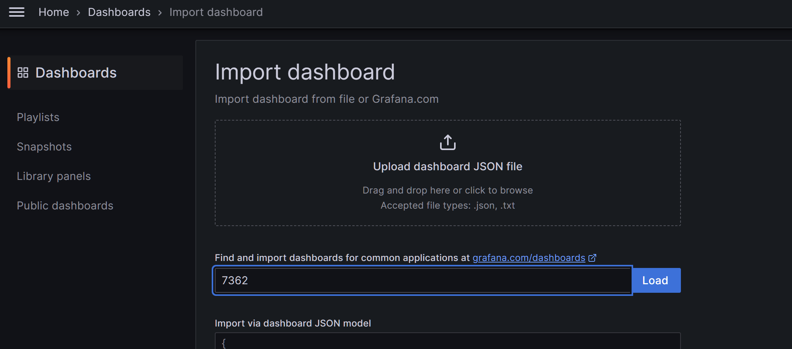
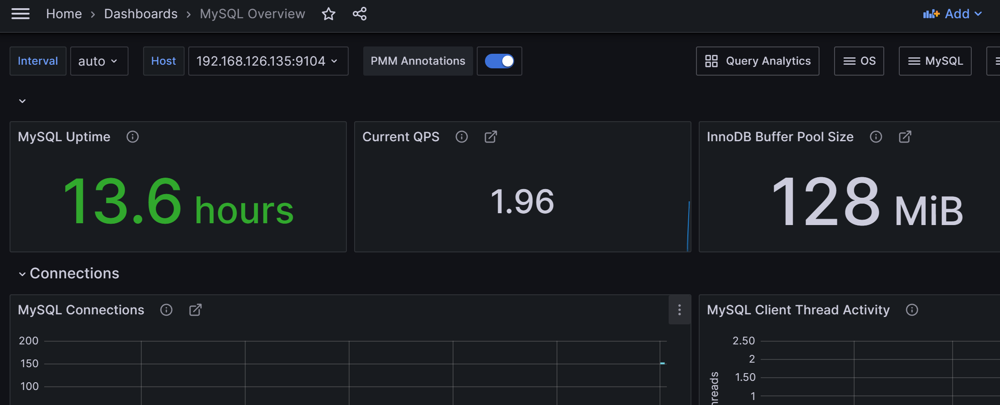
十一、最终完整架构
✅ 部署总结：完成 K8s 集群及外部 MySQL 服务的全链路监控，实现监控数据可视化、故障可感知，贴合企业级监控规范。
本阶段成果
完成 Prometheus 与 Grafana 部署、节点与 MySQL 指标接入以及仪表盘展示，监控链路已经具备可视化与故障感知能力。